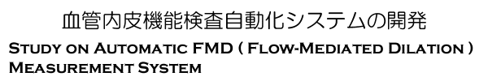

BACKGROUND Measuring of arterial endothelium function is important to diagnose arteriosclerosis in early stage. One of the methods to evaluate endothelium function is measurement of brachial artery diameter after flow-mediated vasodilator response. Brachial artery diameter is measured using an ultrasound imaging system. The physician is required to operate ultrasound transducer to obtain appropriate ultrasound images for measuring artery diameter. However, it requires certain time to obtain the result. It is difficult to manually hold the transducer stably during the measurement. Thus there is a limitation in reproducibility of measurement in the current manual method performed even by skilled medical doctors [1].
PURPOSE AND METHOD In order to improve reproducibility and efficiency of measurement, we have developed an automatic measurement system. The system consists of a PC, ultrasound imaging system, and a robot arm, which manipulates the probe. The position of the robot arm was controlled based on the features of ultrasound image of the brachial artery to obtain appropriate images of artery's wall. The image processing system measures the diameter of brachial artery automatically. Through the measurement, the image processing system assesses the wall image and controls the robot arm so that the probe follows the movement of the artery. Evaluating the images, %FMD is calculated.
CONCLUSION (2007.5) Our study shows this system makes it possible to automate %FMD measurement. The system was able to automatically navigate the ultrasound imaging probe to proper position and measure the changes in diameter of brachial artery with improved reproducibility compared with manual measurement. Testing with a phantom, the probe followed the movement of the artery successfully. However, with human, there seemed to be cases where the system could not detect the movement of the artery, therefore, showing inaccurate results. The system still needs improvements to obtain more accurate, precise results. ACKNOWLEDGEMENT This study was one of the NEDO projects. Related Papers:
|
|||||||||||||||||||||||

|
Contact us Japanese | English |
» TOP » Research » Previous study
|